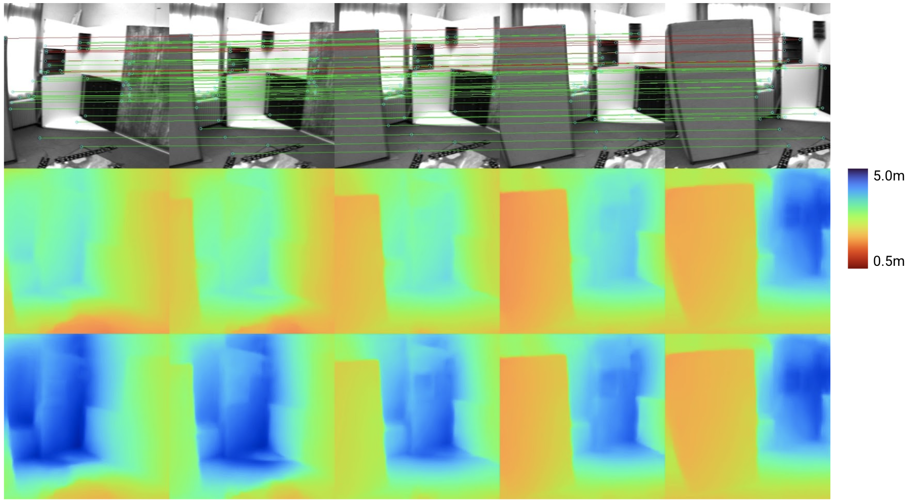
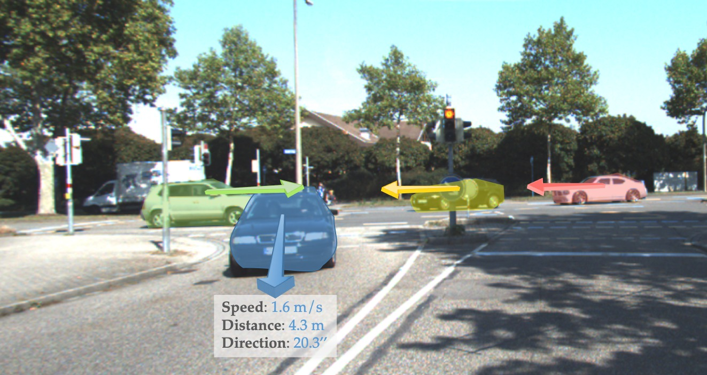
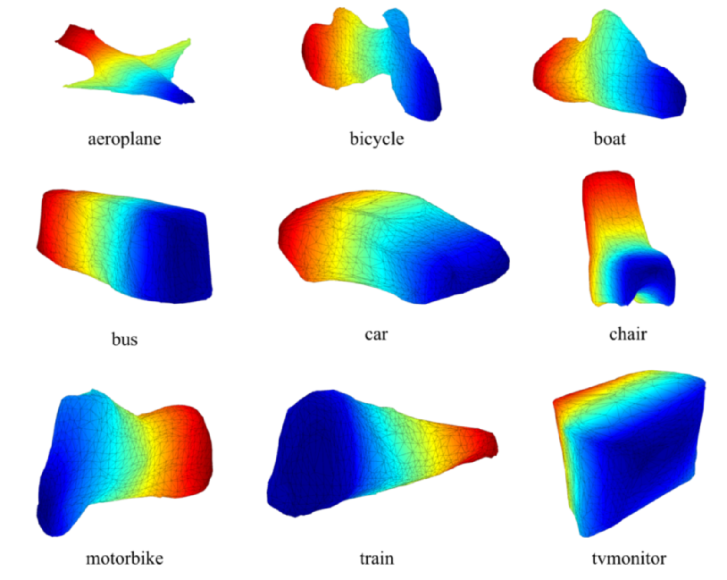
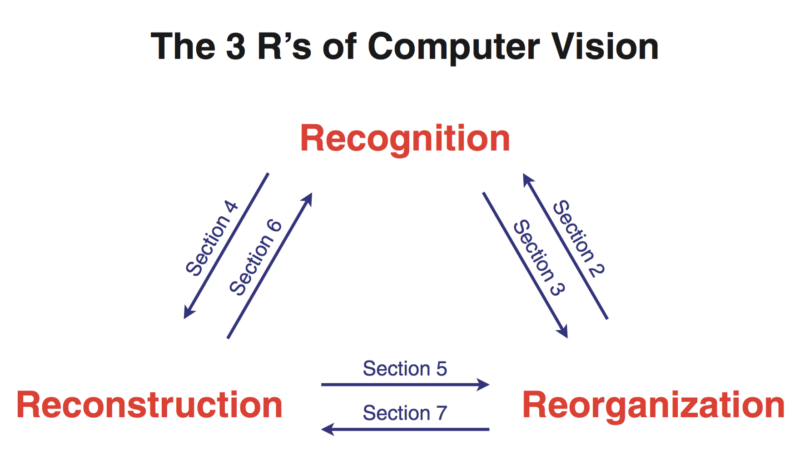
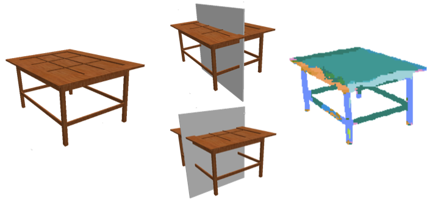
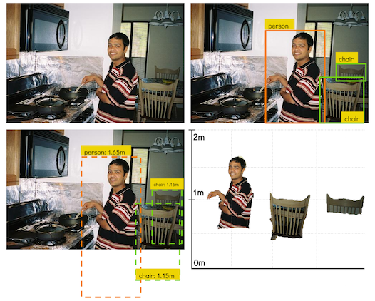
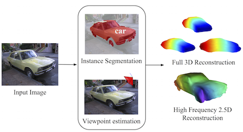
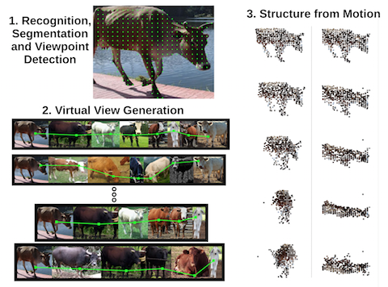
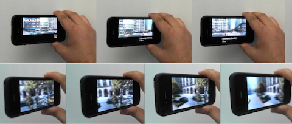
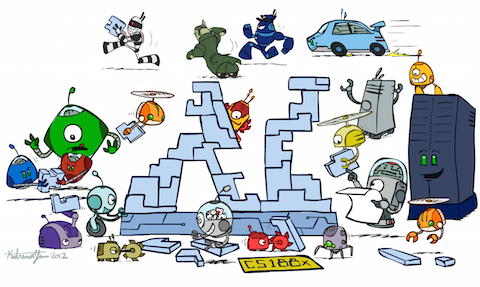

|
I am currently a Staff Research Scientist and Manager at Google AR where we work on problems at the intersection of 3D computer vision, computer graphics, computational photography and machine learning. Some features I have worked on and shipped at Google include the ARCore Depth API, Cinematic Memories for Google Photos and portrait mode for Google Pixel. |
PublicationsMy primary research interests lie in 3D computer vision and computational photography. Specifically, I am excited about applied research problems with the potential to scale to billions of users. |

|
project /
video /
paper /
abstract /
bibtex
Inverse rendering of an object under entirely unknown capture conditions is a fundamental challenge in computer vision and graphics. Neural approaches such as NeRF have achieved photorealistic results on novel view synthesis, but they require known camera poses. Solving this problem with unknown camera poses is highly challenging as it requires joint optimization over shape, radiance, and pose. This problem is exacerbated when the input images are captured in the wild with varying backgrounds and illuminations. In such image collections in the wild, standard pose estimation techniques fail due to very few estimated correspondences across images. Furthermore, NeRF cannot relight a scene under any illumination, as it operates on radiance (the product of reflectance and illumination). We propose a joint optimization framework to estimate the shape, BRDF, and per-image camera pose and illumination. Our method works on in-the-wild online image collections of an object and produces relightable 3D assets for several use-cases such as AR/VR. To our knowledge, our method is the first to tackle this severely unconstrained task with minimal user interaction.
@inproceedings{boss2022-samurai,
author = {Boss, Mark and
Engelhardt, Andreas and
Kar, Abhishek and
Li, Yuanzhen and
Sun, Deqing and
Barron, Jonathan T. and
Lensch, Hendrik P.A. and
Jampani, Varun},
title = {{SAMURAI}: {S}hape {A}nd {M}aterial
from {U}nconstrained {R}eal-world {A}rbitrary
{I}mage collections},
booktitle = {Advances in Neural Information
Processing Systems (NeurIPS)},
year = {2022}
}
|
|  |
project /
video /
paper /
abstract /
bibtex
Visual-inertial odometry (VIO) is the pose estimation backbone for most AR/VR and autonomous robotic systems today, in both academia and industry. However, these systems are highly sensitive to the initialization of key parameters such as sensor biases, gravity direction, and metric scale. In practical scenarios where high-parallax or variable acceleration assumptions are rarely met (e.g. hovering aerial robot, smartphone AR user not gesticulating with phone), classical visual-inertial initialization formulations often become ill-conditioned and/or fail to meaningfully converge. In this paper we target visual-inertial initialization specifically for these low-excitation scenarios critical to in-the-wild usage. We propose to circumvent the limitations of classical visual-inertial structure-from-motion (SfM) initialization by incorporating a new learning-based measurement as a higher-level input. We leverage learned monocular depth images (mono-depth) to constrain the relative depth of features, and upgrade the mono-depth to metric scale by jointly optimizing for its scale and shift. Our experiments show a significant improvement in problem conditioning compared to a classical formulation for visual-inertial initialization, and demonstrate significant accuracy and robustness improvements relative to the state-of-the-art on public benchmarks, particularly under motion-restricted scenarios. We further extend this improvement to implementation within an existing odometry system to illustrate the impact of our improved initialization method on resulting tracking trajectories.
@inproceedings{verse:monodepth-vio-init-eccv2022,
author = {Yunwen Zhou,
Abhishek Kar,
Eric Turner,
Adarsh Kowdle,
Chao X. Guo,
Ryan C. DuToit,
and Konstantine Tsotsos},
title = {Learned Monocular Depth Priors
in Visual-Inertial Initialization},
booktitle = {European Conference on Computer Vision},
year = {2022},
}
|

|
paper /
project /
supplementary /
video /
abstract /
bibtex
Single image 3D photography enables viewers to view a still image from novel viewpoints. Recent approaches combine monocular depth networks with inpainting networks to achieve compelling results. A drawback of these techniques is the use of hard depth layering, making them unable to model intricate appearance details such as thin hair-like structures. We present SLIDE, a modular and unified system for single image 3D photography that uses a simple yet effective soft layering strategy to better preserve appearance details in novel views. In addition, we propose a novel depth-aware training strategy for our inpainting module, better suited for the 3D photography task. The resulting SLIDE approach is modular, enabling the use of other components such as segmentation and matting for improved layering. At the same time, SLIDE uses an efficient layered depth formulation that only requires a single forward pass through the component networks to produce high quality 3D photos. Extensive experimental analysis on three view-synthesis datasets, in combination with user studies on in-the-wild image collections, demonstrate superior performance of our technique in comparison to existing strong baselines while being conceptually much simpler.
@inproceedings{jampani:ICCV:2021,
title = {SLIDE: Single Image 3D Photography with
Soft Layering and Depth-aware Inpainting},
author = {Jampani, Varun and
Chang, Huiwen and
Sargent, Kyle and
Kar, Abhishek and
Tucker, Richard and
Krainin, Michael and
Kaeser, Dominik and
Freeman, William T and
Salesin, David and
Curless, Brian and
Liu, Ce},
booktitle={Proceedings of the IEEE
International Conference on Computer Vision},
year={2021}
}
|

|
paper /
project /
code /
video /
abstract /
bibtex /
p r e s s
We present a practical and robust deep learning solution for capturing and rendering novel views of complex real world scenes for virtual exploration. Previous approaches either require intractably dense view sampling or provide little to no guidance for how users should sample views of a scene to reliably render high-quality novel views. Instead, we propose an algorithm for view synthesis from an irregular grid of sampled views that first expands each sampled view into a local light field via a multiplane image (MPI) scene representation, then renders novel views by blending adjacent local light fields. We extend traditional plenoptic sampling theory to derive a bound that specifies precisely how densely users should sample views of a given scene when using our algorithm. In practice, we apply this bound to capture and render views of real world scenes that achieve the perceptual quality of Nyquist rate view sampling while using up to 4000x fewer views. We demonstrate our approach's practicality with an augmented reality smartphone app that guides users to capture input images of a scene and viewers that enable realtime virtual exploration on desktop and mobile platforms.
@article{mildenhall2019llff,
title={Local Light Field Fusion: Practical View
Synthesis with Prescriptive Sampling Guidelines},
author={Ben Mildenhall and
Pratul P. Srinivasan and
Rodrigo Ortiz-Cayon and
Nima Khademi Kalantari and
Ravi Ramamoorthi and
Ren Ng and
Abhishek Kar},
journal={ACM Transactions on Graphics (TOG)},
year={2019}
}
|
|  |
project /
abstract /
bibtex /
arxiv
We present a system for learning motion maps of independently moving objects from stereo videos. The only annotations used in our system are 2D object bounding boxes which introduce the notion of objects in our system. Unlike prior learning based approaches which have focused on predicting dense optical flow fields and/or depth maps for images, we propose to predict instance specific 3D scene flow maps and instance masks from which we derive a factored 3D motion map for each object instance. Our network takes the 3D geometry of the problem into account which allows it to correlate the input images and distinguish moving objects from static ones. We present experiments evaluating the accuracy of our 3D flow vectors, as well as depth maps and projected 2D optical flow where our jointly learned system outperforms earlier approaches trained for each task independently.
@incollection{sfCaoKHM2019,
author = {Zhe Cao and
Abhishek Kar and
Christian H\"ane and
Jitendra Malik},
title = {Learning Independent Object Motion
from Unlabelled Stereoscopic Videos},
booktitle = CVPR,
year = {2019},
}
|

|
abstract /
bibtex /
supplementary /
arxiv /
blog /
code
We present a learnt system for multi-view stereopsis. In contrast to recent learning based methods for 3D reconstruction, we leverage the underlying 3D geometry of the problem through feature projection and unprojection along viewing rays. By formulating these operations in a differentiable manner, we are able to learn the system end-to-end for the task of metric 3D reconstruction. End-to-end learning allows us to jointly reason about shape priors while conforming to geometric constraints, enabling reconstruction from much fewer images (even a single image) than required by classical approaches as well as completion of unseen surfaces. We thoroughly evaluate our approach on the ShapeNet dataset and demonstrate the benefits over classical approaches and recent learning based methods.
@incollection{lsmKarHM2017,
author = {Abhishek Kar and
Christian H\"ane and
Jitendra Malik},
title = {Learning a Multi-View Stereo Machine},
booktitle = NIPS,
year = {2017},
}
|
|  |
abstract /
bibtex /
project
We address the problem of fully automatic object localization and reconstruction from a single image. This is both a very challenging and very important problem which has, until recently, received limited attention due to difficulties in segmenting objects and predicting their poses. Here we leverage recent advances in learning convolutional networks for object detection and segmentation and introduce a complementary network for the task of camera viewpoint prediction. These predictors are very powerful, but still not perfect given the stringent requirements of shape reconstruction. Our main contribution is a new class of deformable 3D models that can be robustly fitted to images based on noisy pose and silhouette estimates computed upstream and that can be learned directly from 2D annotations available in object detection datasets. Our models capture top-down information about the main global modes of shape variation within a class providing a ``low-frequency'' shape. In order to capture fine instance-specific shape details, we fuse it with a high-frequency component recovered from shading cues. A comprehensive quantitative analysis and ablation study on the PASCAL 3D+ dataset validates the approach as we show fully automatic reconstructions on PASCAL VOC as well as large improvements on the task of viewpoint prediction.
@article{pamishapeTulsianiKCM15,
author = {Shubham Tulsiani and
Abhishek Kar and
Jo{\~{a}}o Carreira and
Jitendra Malik},
title = {Learning Category-Specific Deformable 3D
Models for Object Reconstruction},
journal = {TPAMI},
year = {2016},
}
|
|  |
paper /
abstract /
bibtex
We argue for the importance of the interaction between recognition, reconstruction and re-organization, and propose that as a unifying framework for computer vision. In this view, recognition of objects is reciprocally linked to re-organization, with bottom-up grouping processes generating candidates, which can be classified using top down knowledge, following which the segmentations can be refined again. Recognition of 3D objects could benefit from a reconstruction of 3D structure, and 3D reconstruction can benefit from object category-specific priors. We also show that reconstruction of 3D structure from video data goes hand in hand with the reorganization of the scene. We demonstrate pipelined versions of two systems, one for RGB-D images, and another for RGB images, which produce rich 3D scene interpretations in this framework.
@article{malik2016three,
title={The three R's of computer vision:
Recognition, reconstruction and reorganization},
author={Malik, Jitendra and
Arbel{\'a}ez, Pablo and
Carreira, Jo{\~a}o and
Fragkiadaki, Katerina and
Girshick, Ross and
Gkioxari, Georgia and
Gupta, Saurabh and
Hariharan, Bharath and
Kar, Abhishek and
Tulsiani, Shubham},
journal={Pattern Recognition Letters},
volume={72},
pages={4--14},
year={2016},
publisher={North-Holland}
}
|
|  |
abstract /
bibtex /
arxiv
Actions as simple as grasping an object or navigating around it require a rich understanding of that object's 3D shape from a given viewpoint. In this paper we repurpose powerful learning machinery, originally developed for object classification, to discover image cues relevant for recovering the 3D shape of potentially unfamiliar objects. We cast the problem as one of local prediction of surface normals and global detection of 3D reflection symmetry planes, which open the door for extrapolating occluded surfaces from visible ones. We demonstrate that our method is able to recover accurate 3D shape information for classes of objects it was not trained on, in both synthetic and real images.
@incollection{shapeSymTulsianiKHCM15,
author = {Shubham Tulsiani and
Abhishek Kar and
Qixing Huang and
Jo{\~{a}}o Carreira and
Jitendra Malik},
title = {Shape and Symmetry Induction
for 3D Objects},
booktitle = arxiv:1511.07845,
year = {2015},
}
|
|  |
abstract /
supplementary /
bibtex
We consider the problem of enriching current object detection systems with veridical object sizes and relative depth estimates from a single image. There are several technical challenges to this, such as occlusions, lack of calibration data and the scale ambiguity between object size and distance. These have not been addressed in full generality in previous work. Here we propose to tackle these issues by building upon advances in object recognition and using recently created large-scale datasets. We first introduce the task of amodal bounding box completion, which aims to infer the the full extent of the object instances in the image. We then propose a probabilistic framework for learning category-specific object size distributions from available annotations and leverage these in conjunction with amodal completion to infer veridical sizes in novel images. Finally, we introduce a focal length prediction approach that exploits scene recognition to overcome inherent scaling ambiguities and we demonstrate qualitative results on challenging real-world scenes.
@incollection{amodalKarTCM15,
author = {Abhishek Kar and
Shubham Tulsiani and
Jo{\~{a}}o Carreira and
Jitendra Malik},
title = {Amodal Completion and
Size Constancy in Natural Scenes},
booktitle = ICCV,
year = {2015},
}
|
|  |
project page /
abstract /
bibtex /
supplementary /
code /
arxiv
Object reconstruction from a single image - in the wild - is a problem where we can make progress and get meaningful results today. This is the main message of this paper, which introduces an automated pipeline with pixels as inputs and 3D surfaces of various rigid categories as outputs in images of realistic scenes. At the core of our approach are deformable 3D models that can be learned from 2D annotations available in existing object detection datasets, that can be driven by noisy automatic object segmentations and which we complement with a bottom-up module for recovering high-frequency shape details. We perform a comprehensive quantitative analysis and ablation study of our approach using the recently introduced PASCAL 3D+ dataset and show very encouraging automatic reconstructions on PASCAL VOC.
@incollection{categoryShapesKar15,
author = {Abhishek Kar and
Shubham Tulsiani and
Jo{\~{a}}o Carreira and
Jitendra Malik},
title = {Category-Specific Object
Reconstruction from a Single Image},
booktitle = CVPR,
year = {2015},
}
|
|  |
abstract / bibtex / videos / arxiv
All that structure from motion algorithms “see” are sets of 2D points. We show that these impoverished views of the world can be faked for the purpose of reconstructing objects in challenging settings, such as from a single image, or from a few ones far apart, by recognizing the object and getting help from a collection of images of other objects from the same class. We synthesize virtual views by com- puting geodesics on novel networks connecting objects with similar viewpoints, and introduce techniques to increase the specificity and robustness of factorization-based object reconstruction in this setting. We report accurate object shape reconstruction from a single image on challenging PASCAL VOC data, which suggests that the current domain of appli- cations of rigid structure-from-motion techniques may be significantly extended.
@incollection{vvnCarreira14,
author = {Jo{\~{a}}o Carreira and
Abhishek Kar and
Shubham Tulsiani and
Jitendra Malik},
title = {Virtual View Networks
for Object Reconstruction},
booktitle = CVPR,
year = {2015},
}
|
|  |
abstract / bibtex / website / video
We present a touch-free interface for viewing large imagery on mobile devices. In particular, we focus on viewing paradigms for 360 degree panoramas, parallax image sequences, and long multi-perspective panoramas. We describe a sensor fusion methodology that combines face tracking using a front-facing camera with gyroscope data to produce a robust signal that defines the viewer's 3D position relative to the display. The gyroscopic data provides both low-latency feedback and allows extrapolation of the face position beyond the the field-of-view of the front-facing camera. We also demonstrate a hybrid position and rate control that uses the viewer's 3D position to drive exploration of very large image spaces. We report on the efficacy of the hybrid control vs. position only control through a user study.
@inproceedings{joshi2012looking,
title={Looking at you: fused gyro and face
tracking for viewing large imagery on mobile devices},
author={Joshi, Neel and Kar, Abhishek and Cohen, Michael},
booktitle={Proceedings of the SIGCHI Conference
on Human Factors in Computing Systems},
pages={2211--2220},
year={2012},
organization={ACM}
}
|
![[NEW]](./new.png)
{kind=link}
{kind=link}
{kind=link}
{kind=link}
{kind=link}
{kind=link}
{kind=link}
{kind=link}
{kind=link}
Other Projects |
|
|
{kind=link}
Teaching |
|  |
|
|
|